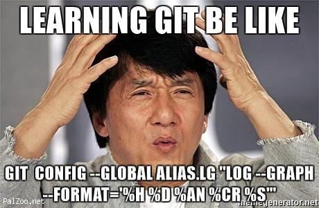
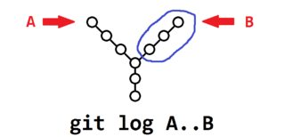
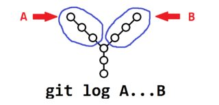
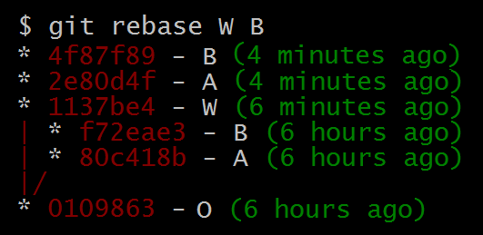

Git Panic
and how to avoid it
Alternative tite:
Cool tricks you learn
if you actually read the manual
*Disclaimer: basic git knowledge required
About me:
- Hi, I'm Mihail Mikov
- Full-stack engineer at Skyscanner
- Hobby juggler
git config --global user.name "Mihail Mikov"
git config --global user.email "mmikov@aubg.edu"
Git is hard
Git Panic symptoms
- Fear of the console / GUI only
- Unstructured / messy history
- Complicated / blocking workflow
- Fixing git by cloning to a new repo
Git Panic symptoms
- Push races / lots of conflicts
- Lost local changes
- Lost remote commits
So, how do I fix my git?
Bad solution: Panic
Solution
Pure Vegan Homeopathic solutions
- Read the manual
- Use the console
- Check your status and history often
- Fetch remotes often
- Push your WIP often
Pure Vegan Homeopathic solutions
- Follow a commit message format
- Name remotes and branches meaningfully
- Make git help you:
- Aliases
- Tags
- Hooks
- Command options
About commands
commandName --options arguments
Command Types:
- Local
- Remote
- Pluming
- Porcelain
Command scope

Project history
Use a short, but detailed graph view of your history
git log --all --graph --format="%h %d %an %cr %s"
git log --author="Your Name" --since="3 weeks ago"
git log master...my-branch --left-right
git log --stat -p
Commit ranges
double vs triple dot ranges


Branch history
Useful for finding things you were working on
# show a history of the commits
# the given branch was pointing to
git reflog <branch>
Referencing commits
The many ways to refer to commits
# exclude commit and its ancestry
^master
# the 2nd ancestor of the given commit
master^^
master~2
#the 2nd parent of the current commit
master^2
Referencing refs
# the 3rd commit in the log of the ref
master@{2}
# the commit the ref pointed to at the given date
master@{5.days.ago}
File history
Don't blame the player, blame the game
# show who and when last modified each line of a file
git blame --date=relative <file-name>
# show the detailed history of a file
git lg -p -- <file-name>
Adding something specific
Stage your changes and create your commits with care
git add -p
Clearing the index snippet by snippet
That shouldn't be in your next commit
# unstage changes from the index
git reset -p

Make that snippet great again
Bring back an older version of the snippet
# pick and override snippets in the working tree
git checkout -p <commitish> <file-name>
Checkout the code
Checkout does a lot of things
# checkout a branch you previously worked on
git checkout @{-1}
# create a new branch and switch to it
git checkout -b "new_branch"
# like "-b" creates a branch, but the first commit
# on this branch will start an independant history
git checkout --orphan "separate_history"
Detached head
A scary name for "you are not on any branch"
git checkout <branch>
# HEAD is pointing to a branch
# which is pointing to a commit
git checkout <commit>
# HEAD is pointing directly to a commit
Unpacking commits
You don't need to rebase to squash your commits
# make HEAD point to a specific commit
# without changing the index or the working tree
git reset --soft <commitish>
Moving our HEAD around
# both HEAD and the current branch
# will point to the given commit
git reset --hard <commitish>
deletes changes in the index and working tree
may lead to disconnected commits
may lead to disconnected commits
Undo some changes
without rewriting history
# creates a commit that negates the changes
# introduced in another commit
git revert <commitish>
"Moving" a single commit around
# creates a new commit at HEAD with the
# same changes introduced by another commit
git cherry-pick <commitish>
"Moving" many commits around
# as if you cherry-picked
# all the commits on a brach in order
git rebase <new-base> <target-defaults-to-HEAD>
# interactive rebase
git rebase -i
# rebase instead of creating a merge commit
git pull --rebase
Rebase in action
Setting up Aliases
Common tasks should be easy to perform
git config --global alias.co "checkout"
git config --global alias.br "branch --verbose"
git config --global alias.up "pull --rebase"
git config --global alias.lg
"log --graph --format='%h %d %an %cr %s'"
git config --global alias.quickfix
"commit -p --amend --no-edit"
Conflicts? Just ignore 'em

Resolving conflicts
Conflicts appear when git cannot merge
the content of two versions of a file meaningfully
the content of two versions of a file meaningfully
# abort if you can't solve the conflicts
git <merge | rebase | cherry-pick> --abort
# Warning: the meaning of --theirs / --ours
# is different between merge and rebase
# finish the operation with "--continue"
git add <resolved-files>
git <merge | rebase | cherry-pick> --continue
Common workflows
- All in master
- Team / Feature branches
- Merge / Pull requests
Fetch, compare, rebase
A pull is just a fetch and a merge
git fetch <remote> <branch>
# show a graph of all commits
# since the last common point between the branches
git lg --left-right HEAD...<remote/branch>
# rebase your changes on top of the remote
git rebase <remote/branch>
Safe force push
# only re-write the remote's history
# if you already have a local copy of it
git push --force-with-lease
# alias: git sfp
Merge, but no fast-forward
# Rebase and merge to keep the branch history visible
git rebase feature_branch master
git merge feature_branch --no-ff
Recap & takeaways
- Use the console
- Name remotes, branches and commits meaningfully
- Keep your workflow & history understandable
- Fetch and push often
- Read the manual
- Make git help you
Links:
Questions?!